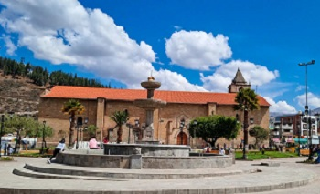
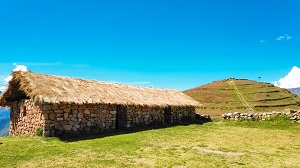
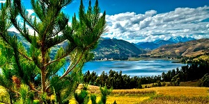

Andahuaylas Pradera de los Celajes
La provincia de Andahuaylas fue creada por Decreto del Libertador venezolano, Simón Bolivar, el 21 de junio de 1825, formando entre otras, el departamento de Ayacucho, posteriormente fue segregada por Ley del 28 de abril de 1873, para formar el departamento de Apurímac. Su capital tuvo el título de Villa, dado por Ley de 12 de noviembre de 1827. Esta villa fue elevada a la categoría de ciudad por Ley N° 12444, del 24 de noviembre de 1955.
Andahuaylas es la ciudad más desarrollada y moderna del departamento de Apurímac, cuna de los Chancas, la tribu más aguerrida de las que se conocen en el Perú. Andahuaylas ofrece varios atractivos turísticos como los baños termales de Hualalache, la Talavera de la Reina, el bello distrito de Chincheros, la Laguna de Pacucha (una de las más bellas y extensas del país, las ruinas de Antabamba y Chalhuanca, capital de la provincia de Aymaraes, que conserva bellas iglesias coloniales. Las vías de acceso son terrestres desde la ciudad de Abancay y la ciudad de Ayacucho. La geografía es accidentada por encontrarse en el corazón de la región andina.
El clima de Andahuaylas es templado, moderadamente lluvioso y con amplitud térmica moderada. La media anual de temperatura máxima y mínima (periodo 1964-1980) es 20.0°C y 6.3°C, respectivamente. La precipitación media acumulada anual para el periodo 1964-1980 es 608.9 mm.
Atractivos Turísticos
* Andahuaylas es una provincia de Apurímac que destaca por la belleza de sus paisajes y sus complejos arqueológicos.
* En la provincia de Andahuaylas hay más de un tesoro escondido.
* Andahuaylas se caracteriza por su imponente belleza con sus atractivos turisticos y sus memorables celajes, aqui te contaremos que lugares sin duda deves visitar en Andahuaylas.
Complejo Arqueológico de Sondor:
 A 21 km al noreste de la ciudad de Andahuaylas (30 minutos en auto) se levanta este complejo. El costo de la entrada general es de S/ 2 y con esto tienes derecho a conocer sus 10 hectáreas de extensión. Aquí estarás a más de 3.200 m.s.n.m. y encontrarás construcciones que pertenecieron originalmente a la cultura Chanka (1100-1400 d.c.), pero fueron posteriormente ocupadas por los incas (1400-1532).
Bosque de Piedras Pampachiri:
 Para descubrir por qué la gente se siente atraída deberás verlo con tus propios ojos. Pampachiri, que en quechua significa “pampa fría”, es un pueblo lleno de atractivos naturales, con innumerables tradiciones históricas y una cultura muy rica. Uno de ellos es este bosque de piedras, ubicado a una hora del pueblo, en plena pampa de los Pabellones. Se extiende a lo largo de 60 hectáreas y a poco más de 3600 metros de altura. Este es un detalle no es menor, ya que muchas personas se ven afectadas por el mal de altura. Sin embargo, eso no debe ser motivo para dejar de visitar este increíble rincón natural. El bosque de piedra de Pampachiri es todo un paraíso para los amantes de la fotografía y para quienes buscan vivir una experiencia diferente.
Para descubrir por qué la gente se siente atraída deberás verlo con tus propios ojos. Pampachiri, que en quechua significa “pampa fría”, es un pueblo lleno de atractivos naturales, con innumerables tradiciones históricas y una cultura muy rica. Uno de ellos es este bosque de piedras, ubicado a una hora del pueblo, en plena pampa de los Pabellones. Se extiende a lo largo de 60 hectáreas y a poco más de 3600 metros de altura. Este es un detalle no es menor, ya que muchas personas se ven afectadas por el mal de altura. Sin embargo, eso no debe ser motivo para dejar de visitar este increíble rincón natural. El bosque de piedra de Pampachiri es todo un paraíso para los amantes de la fotografía y para quienes buscan vivir una experiencia diferente.
Laguna de Pacucha
 Situado a 17 kilómetros de la ciudad Andahuaylas, a una altitud de 3,125 msnm, con temperaturas de 15°C y una máxima de 19°C. a pocos metros de la plaza principal del distrito de Pacucha, jurisdicción a la que pertenece. La laguna de Pacucha más importante de Apurímac y de Andahuaylas es Pacucha, ubicada a 3091 metros sobre el nivel del mar, con una extensión de 5 Km de longitud y 3 Km de ancho y con una circunferencia de 13 km aproximadamente.